原文连接:https://www.cnblogs.com/crossoverJie/p/11669468.html
前言
节前有更新一篇定时任务的相关文章《延时消息之时间轮》，有朋友提出希望可以完整的介绍下常见的定时任务方案，于是便有了这篇文章。
Timer
本次会主要讨论大家使用较多的方案，首先第一个就是 Timer 定时器，它可以在指定时间后运行或周期性运行任务；使用方法也非常简单：
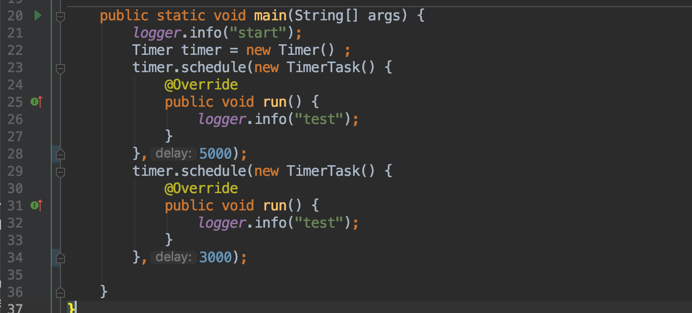
这样便可创建两个简单的定时任务，分别在 3s/5s 之后运行。
使用起来确实很简单，但也有不少毛病，想要搞清楚它所存在的问题首先就要理解其实现原理。
实现原理
定时任务要想做到按照我们给定的时间进行调度，那就得需要一个可以排序的容器来存放这些任务。
在 Timer 中内置了一个 TaskQueue 队列，用于存放所有的定时任务。
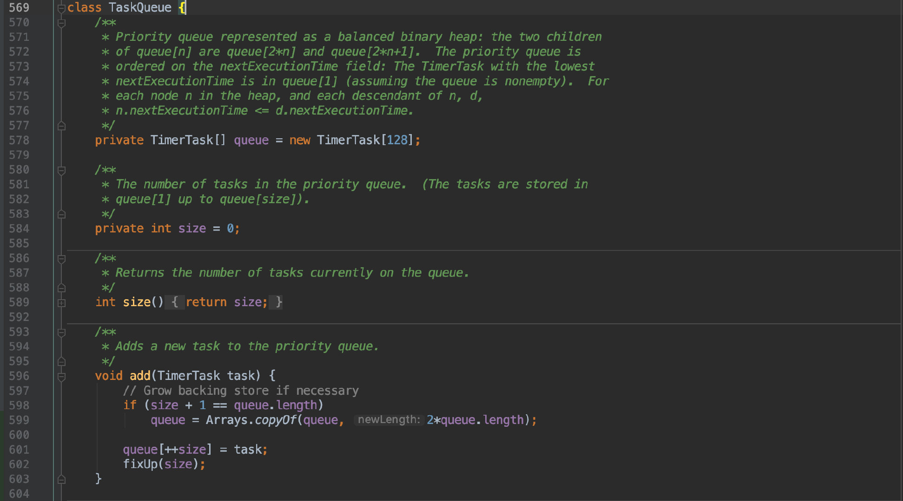
其实本质上是用数组来实现的一个最小堆，它可以让每次写入的定时任务都按照执行时间进行排序，保证在堆顶的任务执行时间是最小的。
这样在需要执行任务时，每次只需要取出堆顶的任务运行即可，所以它取出任务的效率很高为 。
。
结合代码会比较容易理解：
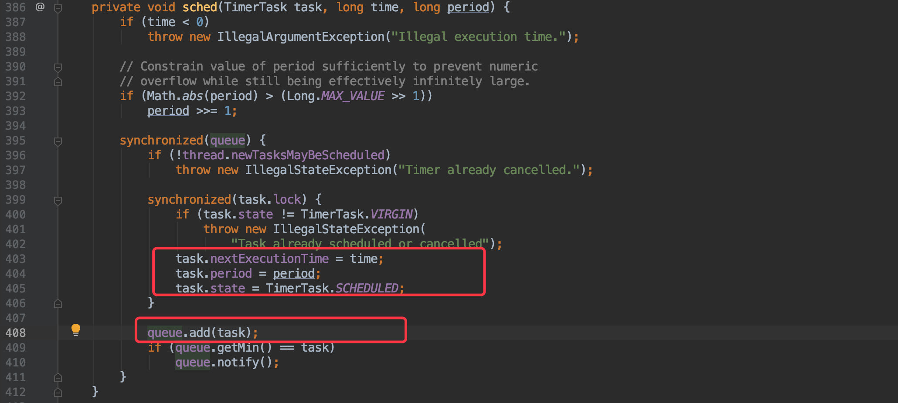
在写入任务的时候会将一些基本属性存放起来（任务的调度时间、周期、初始化任务状态等），最后就是要将任务写入这个内置队列中。
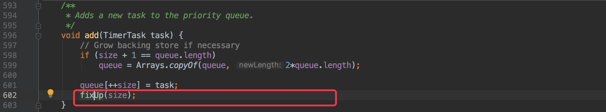
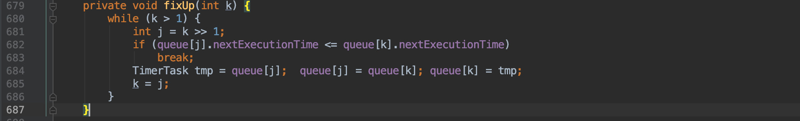
在任务写入过程中最核心的方法便是这个 fixUp() ,它会将写入的任务从队列的中部通过执行时间与前一个任务做比对，一直不断的向前比较。
如果这个时间是最早执行的，那最后将会被移动到堆顶。
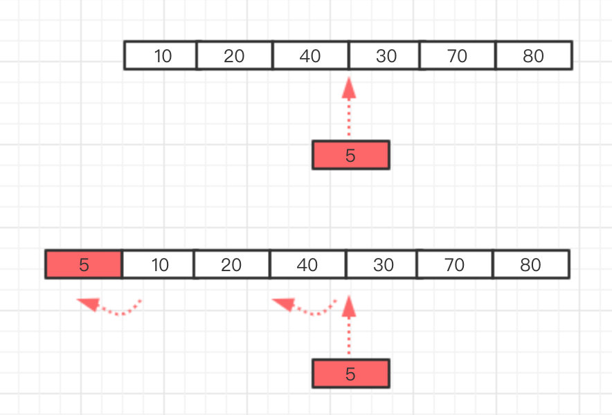
通过这个过程可以看出 Timer 新增一个任务的时间复杂度为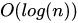。
再来看看它执行任务的过程，其实在初始化 Timer 的时候它就会在后台启动一个线程用于从 TaskQueue 队列中获取任务进行调度。
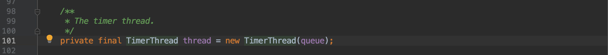
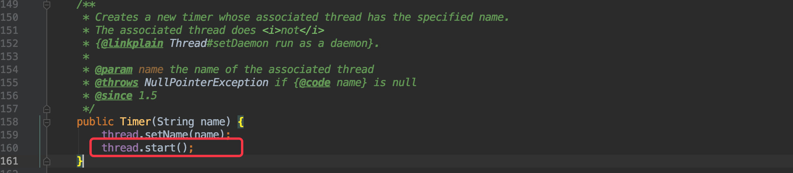
所以我们只需要看他的 run() 即可。
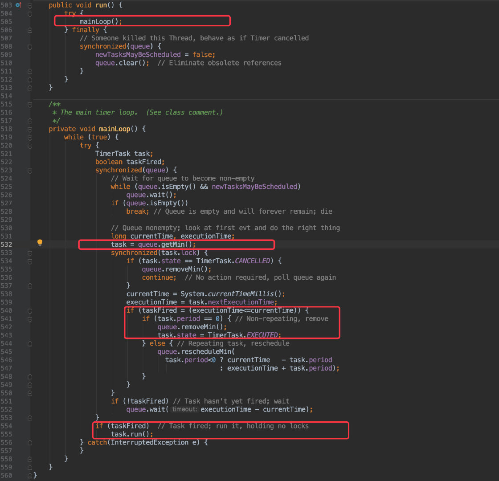
从这段代码中很明显可以看出这个线程是一直不断的在调用
task = queue.getMin();来获取任务，最后使用 task.run() 来执行任务。
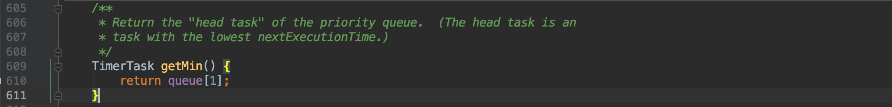
从 getMin() 方法中可以看出和我们之前说的一致，每次都是取出堆顶的任务执行。
一旦取出来的任务执行时间满足要求便可运行，同时需要将它从这个最小堆实现的队列中删除；也就是调用的 queue.removeMin() 方法。
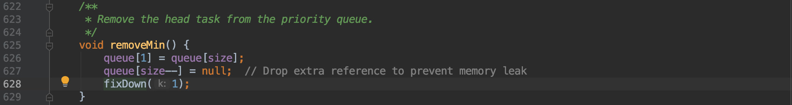
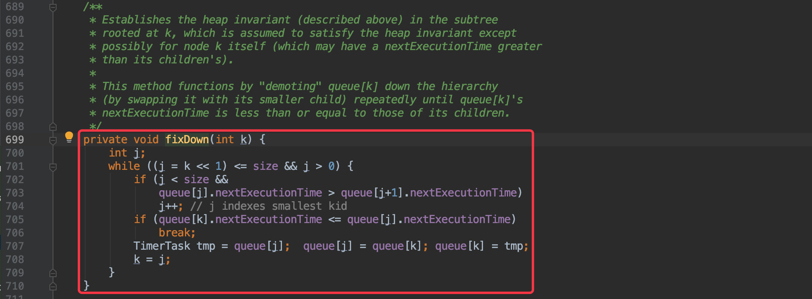
其实它的核心原理和写入任务类似，只不过是把堆尾的任务提到堆顶，然后再依次比较将任务往后移，直到到达合适的位置。
从刚才的写入和删除任务的过程中其实也能看出，这个最小堆只是相对有序并不是绝对的有序。
源码看完了，自然也能得出它所存在的问题了。
- 后台调度任务的线程只有一个，所以导致任务是阻塞运行的，一旦其中一个任务执行周期过长将会影响到其他任务。
Timer本身没有捕获其他异常（只捕获了InterruptedException），一旦任务出现异常（比如空指针）将导致后续任务不会被执行。
ScheduledExecutor
既然 Timer 存在一些问题，于是在 JDK1.5 中的并发包中推出了 ScheduledThreadPoolExecutor 来替代 Timer，从它所在包路径也能看出它本身是支持任务并发执行的。
先来看看它的类继承图：
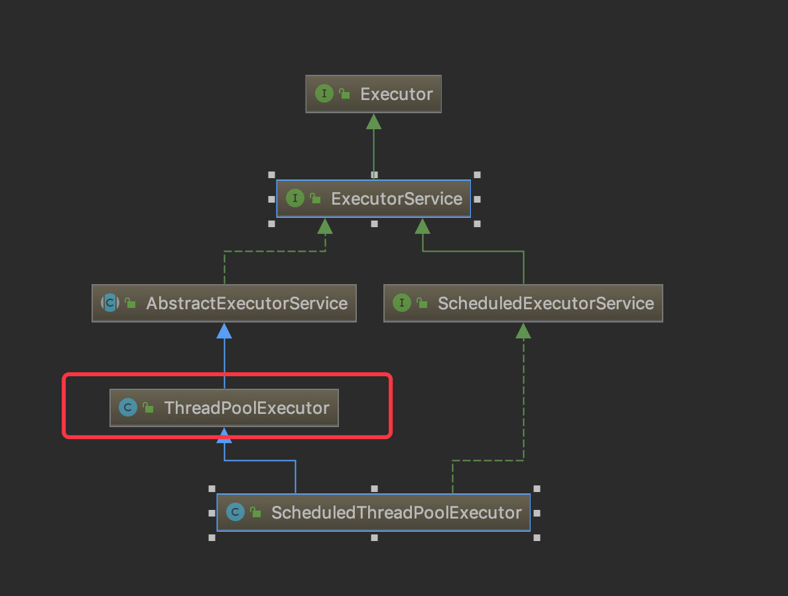
可以看到他本身也是一个线程池，继承了 ThreadPoolExecutor。

从他的构造函数中也能看出，本质上也是创建了一个线程池，只是这个线程池中的阻塞队列是一个自定义的延迟队列 DelayedWorkQueue（与 Timer 中的 TaskQueue 作用一致）
新建任务
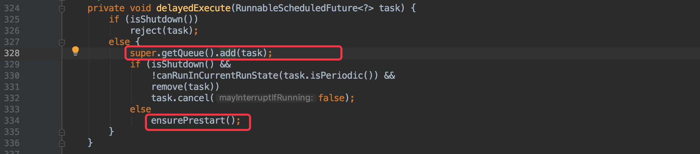
当我们写入一个定时任务时，首先会将任务写入到 DelayedWorkQueue 中，其实这个队列本质上也是使用数组实现的最小堆。
新建任务时最终会调用到 offer() 方法，在这里也会使用 siftUp() 将写入的任务移动到堆顶。
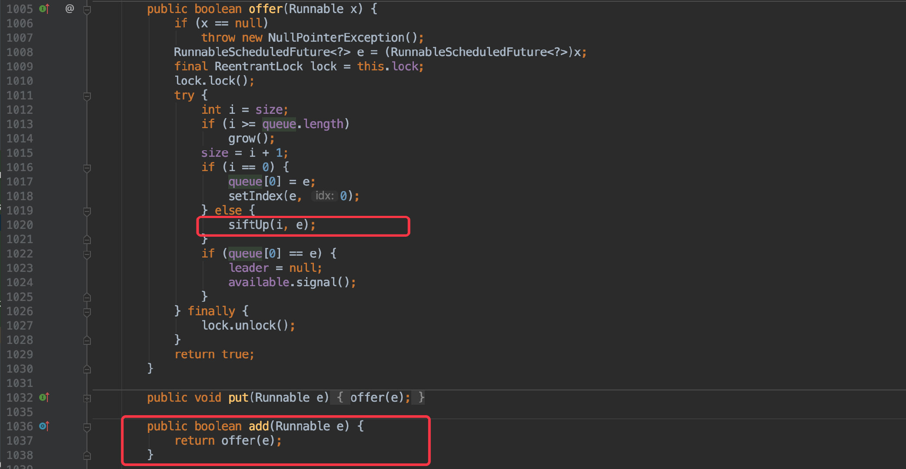
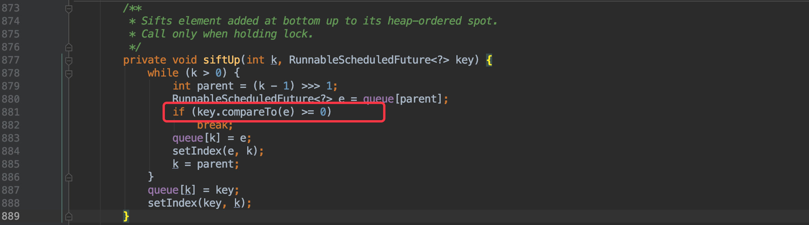
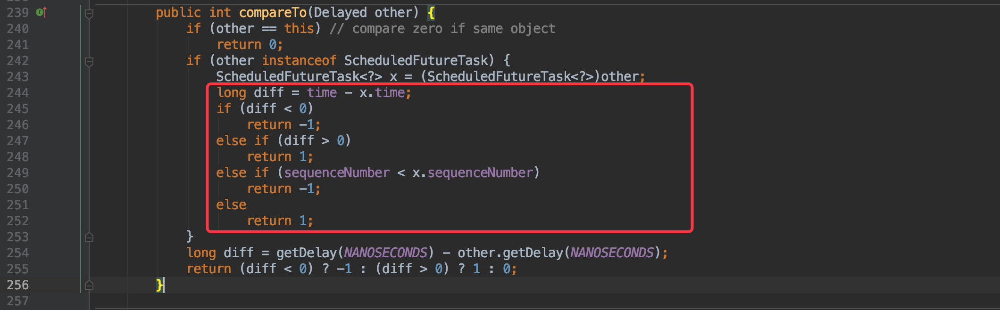
原理就和之前的 Timer 类似，只不过这里是通过自定义比较器来排序的，很明显它是通过任务的执行时间进行比较的。
运行任务
所以这样就能将任务按照执行时间的顺序排好放入到线程池中的阻塞队列中。
这时就得需要回顾一下之前线程池的知识点了：
在线程池中会利用初始化时候的后台线程从阻塞队列中获取任务，只不过在这里这个阻塞队列变为了
DelayedWorkQueue，所以每次取出来的一定是按照执行时间排序在前的任务。
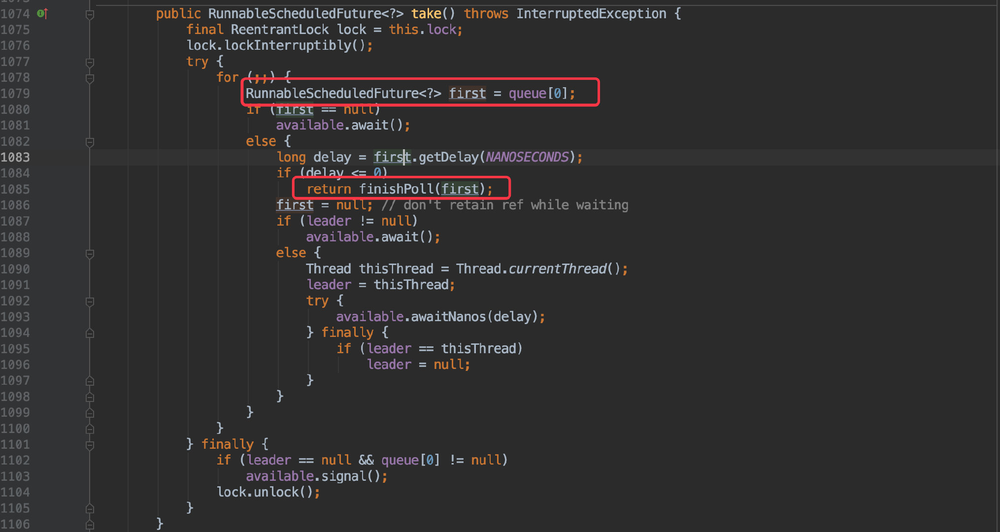
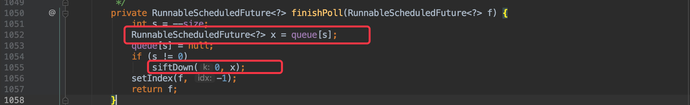
和 Timer 类似，要在任务取出后调用 finishPoll() 进行删除，也是将最后一个任务提到堆顶，然后挨个对比移动到合适的位置。
而触发消费这个 DelayedWorkQueue 队列的地方则是在写入任务的时候。
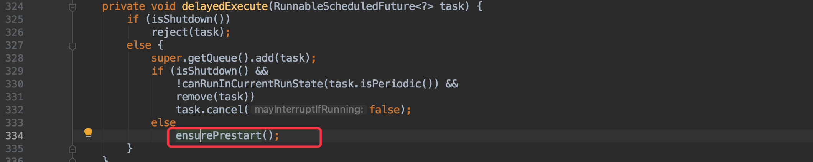
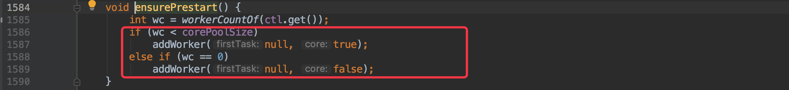
本质上是调用 ThreadPoolExecutor 的 addWorker() 来写入任务的，所以消费 DelayedWorkQueue 也是在其中触发的。
这里更多的是关于线程池的知识点，不太清楚的可以先看看之前总结的线程池篇，这里就不再赘述。
原理看完了想必也知道和 Timer 的优势在哪儿了。
| Timer | ScheduledThreadPoolExecutor |
|---|---|
| 单线程阻塞 | 多线程任务互不影响 |
| 异常时任务停止 | 依赖于线程池，单个任务出现异常不影响其他任务 |
所以有定时任务的需求时很明显应当淘汰 Timer 了。
时间轮
最后一个是基于时间轮的定时任务，这个我在上一篇《延时消息之时间轮》有过详细介绍。
通过源码分析我们也可以来做一个对比：
| ScheduledThreadPoolExecutor | 基于时间轮 | |
|---|---|---|
| 写入效率 | 基于最小堆，任务越多效率越低 | 与 HashMap 的写入类似，效率很高。 |
| 执行效率 | 每次取出第一个，效率很高 |
每秒拨动一个指针取出任务 |
所以当写入的任务较多时，推荐使用时间轮，它的写入效率更高。
但任务很少时其实 ScheduledThreadPoolExecutor 也不错，毕竟它不会每秒都去拨动指针消耗 CPU ，而是一旦没有任务线程会阻塞直到有新的任务写入进来。
RingBufferWheel 更新
在之前的《延时消息之时间轮》中自定义了一个基于时间轮的定时任务工具 RingBufferWheel ，在网友的建议下这次顺便也做了一些调整，优化了 API 也新增了取消任务的 API。
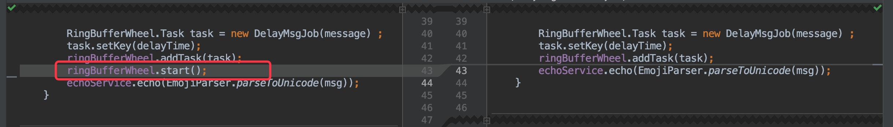
在之前的 API 中，每当新增一个任务都要调用一下 start()，感觉很怪异；这次直接将启动函数合并到 addTask 中，使用起来更加合理。
同时任务的写入也支持并发了。

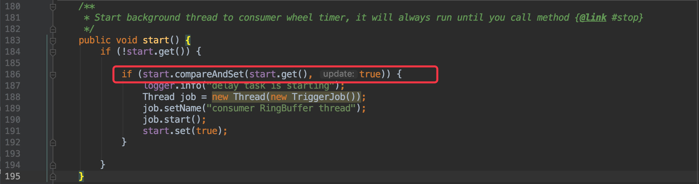
不过这里需要注意的是 start() 在并发执行的时候只能执行一次，于是就利用了 CAS 来保证同时只有一个线程可以执行成功。
同时在新增任务的时候会返回一个 taskId ，利用此 ID 便可实现取消任务的需求（虽然是比较少见），使用方法如下：
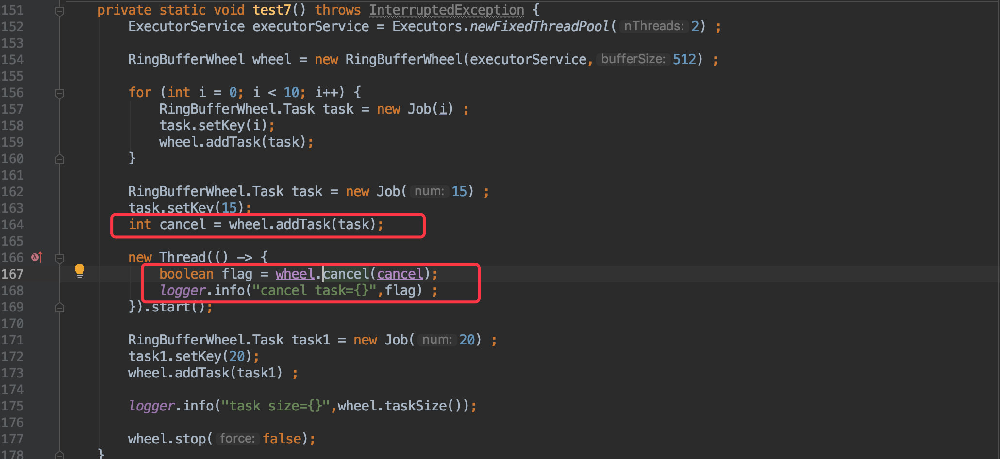
感兴趣的朋友可以看下源码也很容易理解。
分布式定时任务
最后再扩展一下，上文我们所提到的所有方案都是单机版的，只能在单个进程中使用。
一旦我们需要在分布式场景下实现定时任务的高可用、可维护之类的需求就得需要一个完善的分布式调度平台的支持。
目前市面上流行的开源解决方案也不少：
我个人在工作中只使用过前面两者，都能很好的解决分布式调度的需求；比如高可用、统一管理、日志报警等。
当然这些开源工具其实在定时调度这个功能上和上文中所提到的一些方案是分不开的，只是需要结合一些分布式相关的知识；比远程调用、统一协调、分布式锁、负载均衡之类的。
感兴趣的朋友可以自行查看下他们的源码或官方文档。
总结
一个小小的定时器其实涉及到的知识点还不少，包括数据结构、多线程等，希望大家看完多少有些帮助，顺便帮忙点赞转发搞起🥳。
本文所涉及到的所有源码：
https://github.com/crossoverJie/cim
你的点赞与分享是对我最大的支持